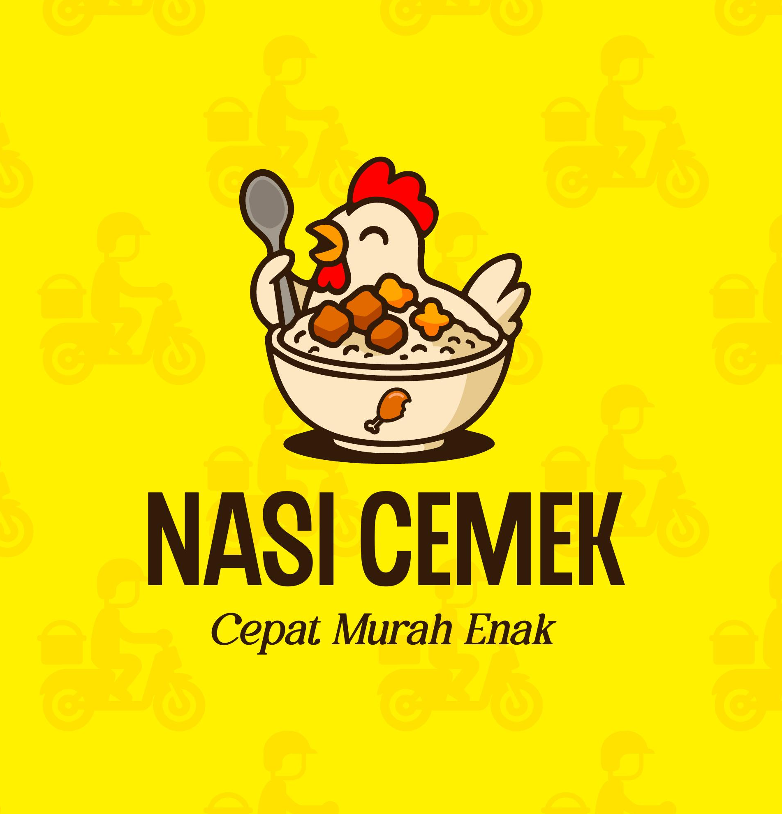
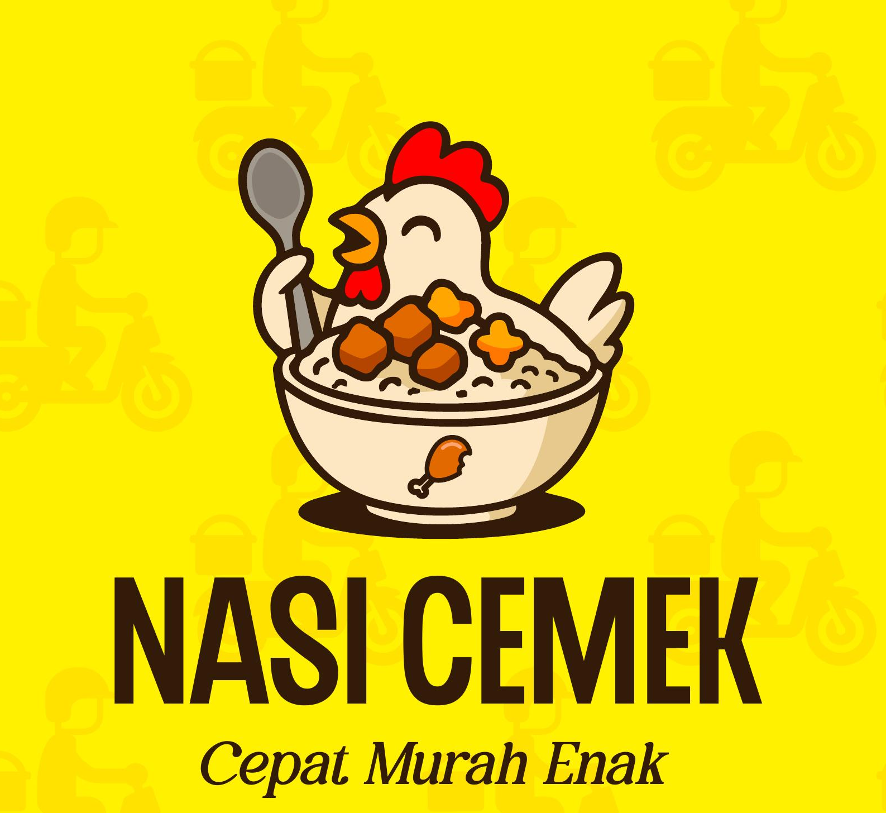

Brand identity and mascot logo design for Nasi Cemek, a local Indonesian food brand. The mascot character was designed to be playful and memorable, reflecting the warmth of Indonesian street food culture.


